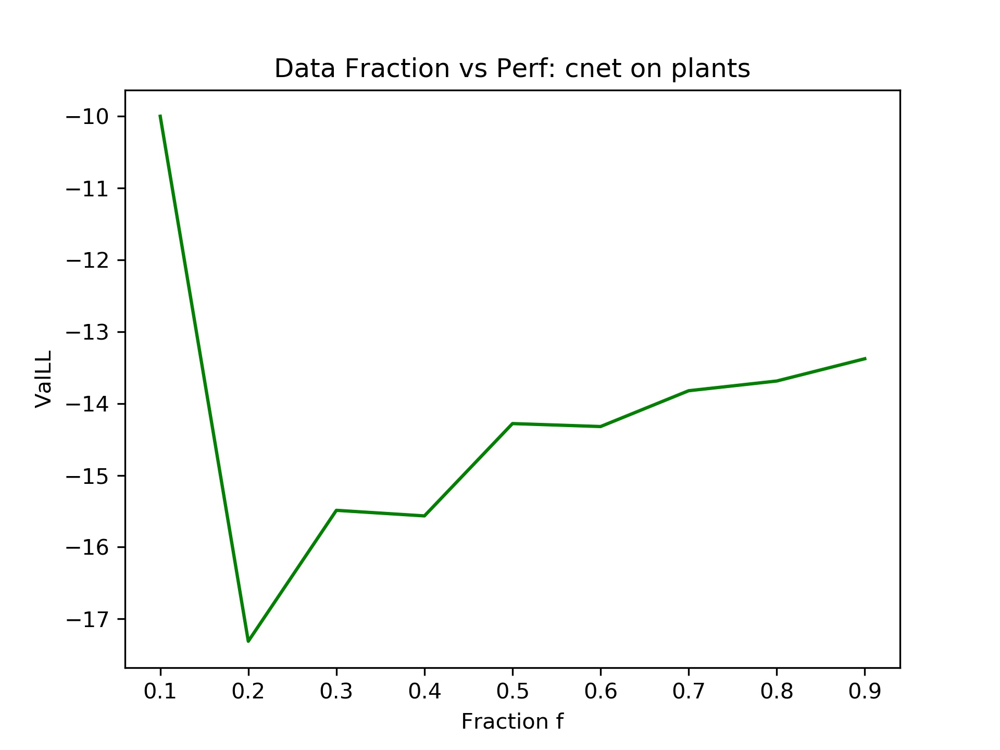
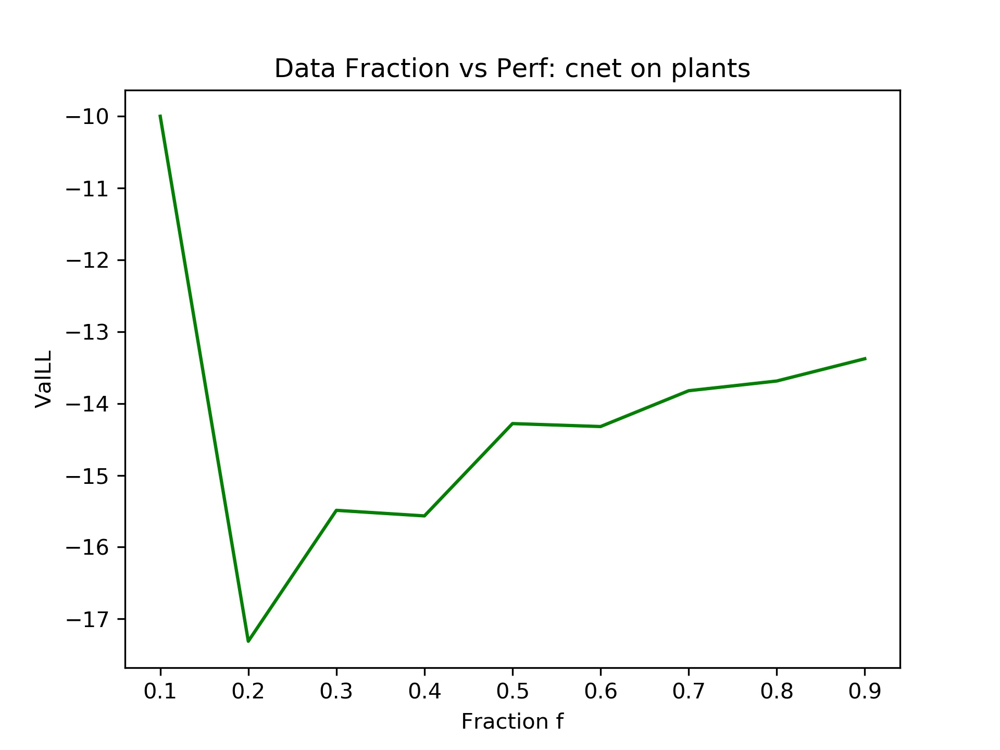
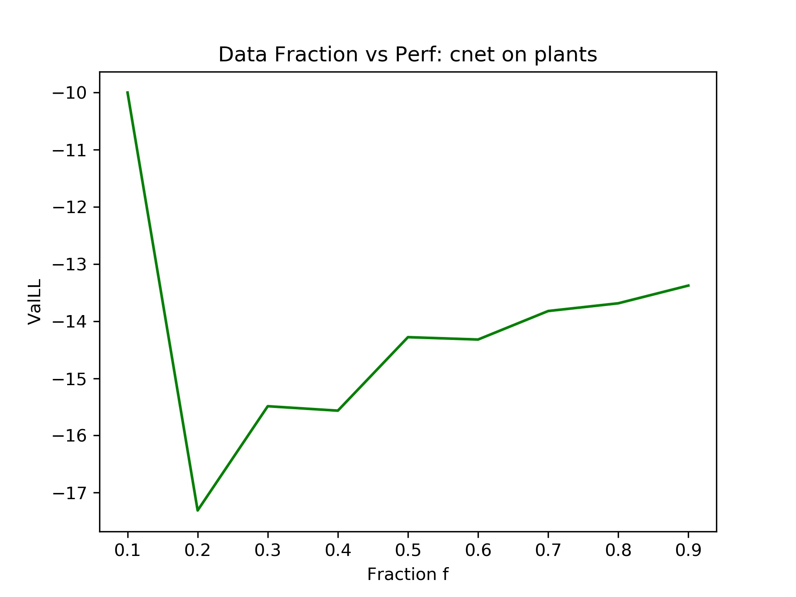
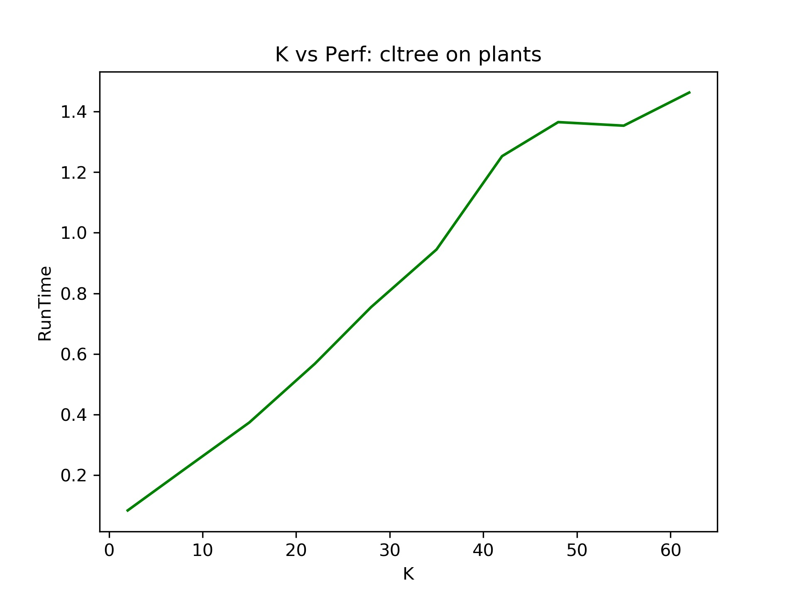

Ninad Arun Khargonkar
Tractable probabilistic models are a class of probabilistic models which offer polynomial time exact inference over many different model queries. Such models have been the focus of recent research in probabilistic modeling for example, the sum product network [4] and the cut-set network [2]. We base our project on scaling the learning process of cutset networks. Cuset networks are basically OR trees with a tree Bayesian network (Chow-Liu tree) at their leaves which enables fast linear time inference . The Chow-Liu algorithm [1] is used to learn the tree Bayesian network from the training data, hence the name “Chow Liu tree” which we will in this document to refer to tree bayesian network learned using the Chow Liu algorithm.
Although tractable structure-learning is an attractive property of tree networks, learning a Chow-Liu tree is quadratic in the number of feature variables and this cost can be prohibitive in scaling the learning process of cutset networks to larger and higher dimensional data sets . We introduce approximations to this method with sub-quadratic cost in data and number of features by imposing a structure to tree through the calculation of a spanning tree. Scaling this algorithm is an important problem since its a part of a larger learning routine in cutset networks, therefore it can also prove to be a bottleneck in other variants of cutset networks [6, 7].
Learning a cutset network from data d involves two parts: a global OR tree and Chow Liu trees at leaves. The OR tree is learned using the information gain greedy heuristic which selects the variable having maximum information gain. This puts the running time for OR tree as O(n2d). The Chow Liu algorithm learns a tree network T(x) from the training data in order to match the true probability distribution P over a set V of variables with |V| = n. The probability for any vector x is then as follows:
T(x) = ∏v ∈ VT(xv | xpa(v))
A “good” tree structure T will be close to the true underlying data distribution P and the key observation of the Chow-Liu algorithm was that the Kullback-Leibler divergence between P(x) and T(x) is minimized as a result of each edge of the tree maximizing the total mutual information which is nothing but the sum of mutual information between the nodes in all edges of the tree. The algorithm proceeds by first creating a clique G with the nodes as the variables and the edge weights representing the mutual information for the pair of nodes in that edge. Then it computes the maximum weight spanning tree GT of G to learn the structure of the tree whereas the parameters, T(x, y) (joint probability distributions for each (x, y) edge) are equal to P(x, y) which is empirical distribution from the data d. GT is usually learned by using a standard minimum spanning tree algorithm (negating the edge weights) like Prims or Kruskal which take O(Elog V) time with $|E| = \frac{n (n-1)}{2}$ for graph G.
Computing the entire clique G also requires first computing O(n2) mutual information pairs with each pair taking one pass over the data d giving us a total of O(n2d) which dominates the total running time of the algorithm. This run time is the best we can do in finding the exact tree structure. In order to reduce it, we need to forgo computing some mutual information pairs which will result in less edge weight computations and hence less edges in the graph (thereby making it less dense).
It can be seen that since the minimum spanning tree algorithm (mst) depends on the edges in the original graph, a cost reduction can be obtained by starting out with an “incomplete” graph through random sampling methods and then learning an exact mst of the incomplete graph. Another approach would to compute the approximation to mst directly, by building the tree one edge at a time in a greedy manner. In order to make the OR tree structure learning faster, we plan to use only a sample of the data for computing the information gains and then selecting the best attribute for splitting the data set.
We try out two schemes for learning an approximation to the Chow Liu tree along with learning the OR tree with only a fraction of data points. These will be used in cutset network learning algorithm as part of the leaf node computation routine.
In this method we directly compute a spanning tree of the graph. Since its an approximate method, we are no longer guaranteed to get a minimum spanning tree. We build the tree in n − 1 steps where at each step we add an edge for the spanning tree and meanwhile also ensuring that all the nodes are covered. We start with a random root node and then select K neighbors for it randomly. Out of the K nodes, we pick the node having the highest mutual information with the root and add an edge for them. At the next iteration, we select the root from the nodes in the tree being built and go on in a similar manner until we add n − 1 edges to get the spanning tree. We maintain the tree structure through a parents array which tracks the parent for each node. At each step of the loop, we spend O(dK) time in computing the K mutual information pairs thereby giving us a total running time of O(ndK). The algorithm pseudo code is shown below:
root = select(nodes, 1)
tree_nodes.add(root)
nodes.remove(root)
edges = 0
parent[root] = -1
while edge_count < n-1:
if len(nodes) <= K:
candidates = nodes
else:
candidates = select(nodes, K)
best_node = BestNode(root, candidates)
tree_nodes.add(best_node)
nodes.remove(best_node)
parent[best_node] = curr_node
edge_count += 1
curr_node = select(tree_nodes, 1)The Chow Liu algorithm uses a complete graph between the n variables. Instead of computing all n2 edges, we create an incomplete graph by not computing all the mutual information pairs. This is motivated by the random edge sampling method as described in [5]. Random edge sampling directly samples K edges (as K node pairs) and uses this as an approximation to graph G. However, there is a chance of having isolated nodes in the graph making is disconnected (which would make the mst a forest!). In order to avoid this, we construct the graph in a step wise manner by building up a sort-of-dense tree in a similar as seen in previous section. However, we do not throw away any edges and keep all K of them for each iteration and we also stop the iterations once we have completed n steps. After computing the graph, we feed it to an exact mst algorithm to get the desired tree. At each step we spend O(dK) time for the mutual information pairs and the loop runs for n steps, with each step adding K edges to the graph giving us total of nK edges. Here too the running time is O(ndK) since d dominates the log term in mst calculation. The algorithm pseudo code is shown below:
curr_node = select(nodes, 1)
graph_nodes.add(curr_node)
steps = 0
flag = 0
while nodes or steps < nvars-1:
if flag == 1:
candidates = select(graph_nodes, K)
elif len(nodes) <= samp_k: # Stop sampling!
candidates = nodes
else:
candidates = select(nodes, K)
for e in candidates:
score = MutualInfo(curr_node, e)
adjmat[curr_node, e] = score
adjmat[e, curr_node] = score
if flag == 0:
graph_nodes.add(candidates)
nodes = nodes \ candidates
if nodes.empty():
flag = 1
steps += 1
curr_node = select(graph_nodes, 1)We evaluated our algorithms on nine binary valued data sets as seen in the two tables below. There is wide range for both n and d across all the data sets and hence they are representative enough and potentially give us an insight into different use cases. The evaluation metrics were the test set log likelihood and the running time for training the model and 10 repeated runs were used to compute these values and their average is reported. For all algorithms we used 1-Laplace smoothing to avoid numerical errors and tuned the fraction f (for OR tree learning) using the validation data. The fraction values considered were: [0.1, 0.2, 0.3, 0.4, 0.5, 0.6, 0.7, 0.8, 0.9]. Note that K is not necessarily a good hyper parameter here since we expect the model runtime to go up as K approaches n and asymptotically the runtimes match if K = n. Therefore we set its value as the ceiling of K = log n, which results in the runtimes being sub-quadratic in n. We ran a preliminary experiment on the plants dataset to see the effect of different K values and data sampling fractions on the algorithm runtime and validation data log likelihood. The model for trying out the different K values was just the Approx Tree i.e not used as a part of cutset network.

 
The baseline experiments were the standard chowliu tree and cutset networks along with independent bayesian networks which acted as a sanity check for our approximation methods (and also like a crude but acceptable lower bound). Our hypothesis was that the approximation methods should have better run time while suffering a slight drop in test set log likelihood performance.
The run times (in seconds) for the different methods for each data set are presented in Table-1 while the test set log-likelihoods are shown in Table-2. For each data set, the bold entries indicates the lowest value for the running time and the highest value for test set log-likelihood in tables 1 and 2 respectively. Independent Bayesian Networks were omitted from the run time table since the values are often very close to zero and do not help much in the analysis. The codes used in the tables for the different experiment names are as follows:
| Dataset | # Var | # Trn | CLTree | CNet | fCnet + AT | fCnet + AG |
|---|---|---|---|---|---|---|
| nltcs | 16 | 16181 | 0.03952 | 0.17773 | 0.04354 | 0.05741 |
| msnbc | 17 | 291326 | 0.78711 | 2.59293 | 0.37496 | 0.39212 |
| plants | 69 | 17412 | 0.29355 | 2.14429 | 0.18305 | 0.24551 |
| jester | 100 | 9000 | 0.29244 | 1.92556 | 0.31162 | 0.40367 |
| audio | 100 | 15000 | 0.48968 | 3.51331 | 0.39658 | 0.49917 |
| netflix | 100 | 15000 | 0.48851 | 3.61621 | 0.52049 | 0.56322 |
| accidents | 111 | 12758 | 0.50744 | 4.63285 | 0.71558 | 8.70181 |
| dna | 180 | 1600 | 0.15916 | 1.01499 | 0.37915 | 0.54568 |
| reuters52 | 889 | 6532 | 17.6617 | 225.748 | 4.51495 | 6.40184 |
| Dataset | IndepBN | CLTree | CNet | fCnet + AT | fCnet + AG |
|---|---|---|---|---|---|
| nltcs | -9.23362 | -6.75904 | -5.91823 | -5.55817 | -5.44865 |
| msnbc | -6.77014 | -6.54012 | -6.12911 | -4.75659 | -5.10283 |
| plants | -31.2662 | -16.5241 | -13.4008 | -9.68081 | -10.5392 |
| jester | -63.8834 | -58.2265 | -58.1917 | -49.9633 | -49.5859 |
| audio | -49.3368 | -44.3749 | -43.9848 | -37.2985 | -37.7936 |
| netflix | -64.5614 | -60.2503 | -62.4992 | -50.8655 | -51.0449 |
| accidents | -45.5596 | -33.1881 | -31.9951 | -33.6356 | -32.8759 |
| dna | -100.386 | -87.7347 | -96.6158 | -78.8981 | -80.8926 |
| reuters52 | -112.626 | -97.5372 | -92.8065 | -42.3804 | -48.6373 |
As expected the standard Chow-Liu tree algorithm is the fastest for five out of the nine datasets. The approximation methods on cutset networks (fCnet + AT, AG) too show a big drop in runtime (compared to CNet) with sometimes even being the astest method for a particular dataset with the drop being more evident on larger datasets like reuters52. The AT method is naturally faster amongst the two approx methods since it computes the spanning tree on the fly whereas AG computes a mst from an less dense graph – involving more edge calculations and tree structure learning. The sampling of data for OR tree might also helping the two approx methods since the calculation of information gain is prohibitive cost in the overall running time. An anomolaous result is the running time for fCnet + AG with the accidents data. Its runtime is higher than other algorithms by a large magnitude and may be due to a bug in runtime calculation while the program was running!
The predictive performance of the approximation method (measured through their log likelihood scores) comes out quite well, sometimes even being the best of all! This is was not entirely expected since a worse result than CNet with a slightly better run time was expected. Here too AT is the winner among the 5 methods for majority of the data sets. This might be due to higher ability for generalization (and consequently lower overfitting) from the inherent randomization in the model which helps pick out pairs which might have never been picked for the tree edges when considering all the n2 pairs and selecting only the high scoring ones. This is also clear from the preliminary experiments (earlier figures) where increasing K does not necessarily lead to better performance on validation data as it might be leading to overfitting. Even when AT and AG methods don’t stand out as the clear winners (eg. for accidents data), their performance is quite close to the overall best performer.
We introduced 2 approximation schemes and analyzed their running time and log likelihood (predictive) performance on nine binary data sets. The results seem to have followed our hypotheses of the gain in running time. A pleasant surprise was the superior performance in test set log likelihoods across majority of the datasets. Scaling the learning process by making it sub-quadratic or even linear time is an important step in making these models suit to bigger and diverse datasets.
The current approximation schemes are randomized methods at heart and hence future work includes integrating them into a mixture setting and performing pruning on the trees to perhaps learn even better models. The approximation methods can further be modified based on sparsity assumptions in the data as seen in [3] or through different sampling heuristics [4]. One can even adopt a more aggressive approximation scheme but the order d term (from computing the mutual information between any pair of variables) largely cancels out any gains from computing the minimum spanning via a fast method pointing towards the need to approximate the mutual information for each variable pair.
Chow, C., and Cong Liu. “Approximating discrete probability distributions with dependence trees.” IEEE transactions on Information Theory 14.3 (1968): 462-467.
Rahman et al, “Cutset Networks: A Simple, Tractable, and Scalable Approach for Improving the Accuracy of Chow-Liu Trees”, ECMLPKDD, 2014.
Meil et al, “An accelerated Chow and Liu algorithm: fitting tree distributions to high-dimensional sparse data”, ICML, 1999.
Poon, Hoifung, and Pedro Domingos. “Sum-product networks: A new deep architecture.” 2011 IEEE International Conference on Computer Vision Workshops (ICCV Workshops). IEEE, 2011.
Ammar, Sourour, et al. “Sub-quadratic Markov tree mixture learning based on randomizations of the Chow-Liu algorithm.” ,PGM, 2010.
Mauro et al, “Multi Label Classification with Cutset Networks”, PGM, 2016.
Rahman et al, “Learning Ensembles of Cutset Networks,” AAAI 20 16.